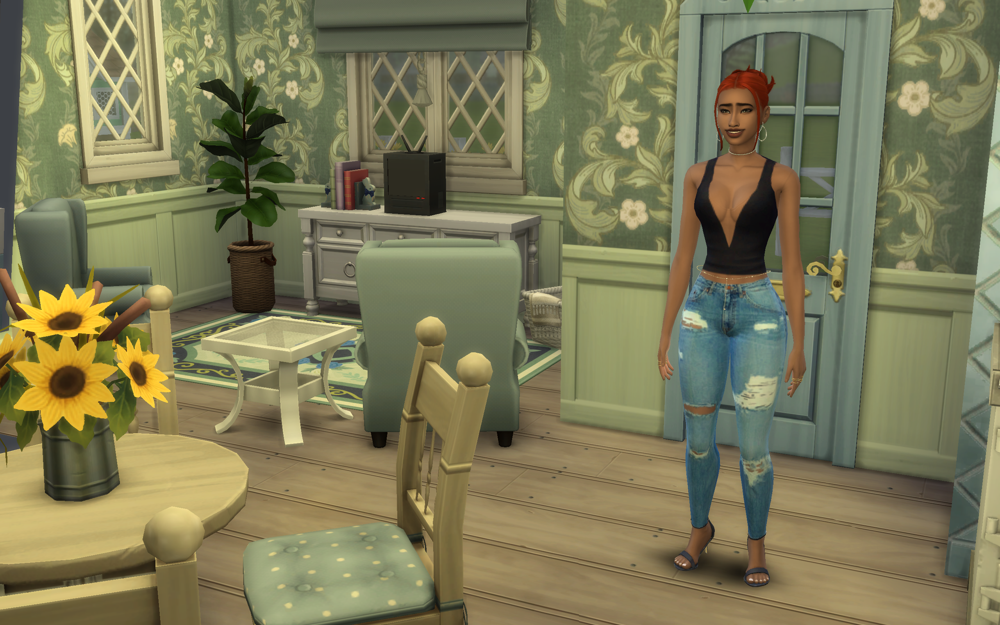

Buying Our Starter Home
September 29, 2024 by Shamari McPherson

Mean Green Or Too Much Green
Buying your first home is a major milestone, but it can seem daunting, especially if you're on a tight budget. In The Sims 4, even aspiring homeowners can achieve their dreams with a little creativity and planning. With careful budgeting and savvy shopping, you can find a charming starter home for under 20k Simoleons.
Explore quaint neighborhoods, bargain hunt at local auctions, or even consider renovating a fixer-upper to create your perfect cozy haven. Remember, the most important thing is to find a space that reflects your Sim's personality and provides a solid foundation for future growth.
But did I make it too green?